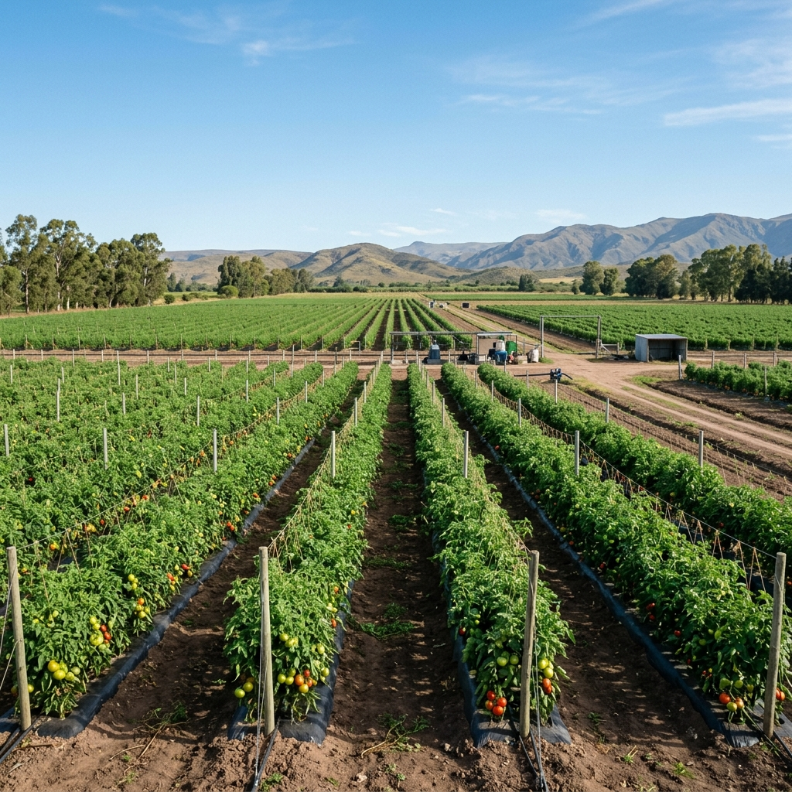

Jornada sobre Producción Hortícola Bajo Cubierta

El pasado 28 de julio llevamos a cabo una exitosa jornada técnica en la zona de cinturones hortícolas bajo cubierta. El encuentro contó con la asistencia de más de 40 productores interesados en optimizar sus esquemas sanitarios y nutricionales biológicos.
Durante la jornada se realizaron demostraciones prácticas sobre el uso de biocontroladores de la firma FACYT, analizando su efectividad frente a plagas comunes bajo invernadero (trips, mosca blanca y arañuelas). También se destacó la aplicación foliar de bioestimulantes que potencian el desarrollo de frutos sin dejar residuos químicos, un factor clave en la comercialización de hortalizas frescas.
Agradecemos a todos los productores que participaron y compartieron sus experiencias, reforzando nuestro compromiso de acercar soluciones tecnológicas aplicadas al día a día del campo.